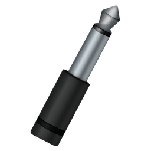

LineIn is a simple application for OS X, designed to enable the soft playthru of audio from input devices. In simpler terms, you can use LineIn to hear sound coming in through a microphone or any other device plugged in to your Sound In port, just as was once available with OS 9's "Play input through output device" option. It can be used with Audio Hijack to record audio from external devices.
LineIn provides play thru of audio from input devices to output devices.
Latency be gone! We've made improvements to limit latency of processed audio during long audio device capture sessions, and also to prevent static and skips.
You can now toggle play-thru via the menu bar. Just look for the "Enable/Disable Play-thru" menubar option.
• A Macintosh computer
• OS X 10.7 or higher
To install LineIn, just drag it from your download folder to your Applications folder, or wherever you'd like to keep it.
To uninstall LineIn, simply delete the application.
LineIn is free software. Enjoy! If you like LineIn, try out our other applications at http://rogueamoeba.com/
LineIn v2.3
Released 09.03.2014
- Latency be gone! We've made improvements to limit latency of processed audio during long audio device capture sessions, and also to prevent static and skips.
- You can now toggle play-thru via the menu bar. Just look for the "Enable/Disable Play-thru" menubar option.
- Some small UI changes and improvements have been made.
- An emergency update, necessitated by immediate changes Apple has made to their Gatekeeper system, restores compatibility on Mac OS X 10.9.5 and higher.
LineIn v2.2
Released 06.25.2014
- The LineIn window can now be closed, with a menu item to re-open it.
- LineIn now requires Mac OS X 10.7 (Lion)
LineIn v2.1.1
Released 04.23.2013
- Several bug fixes and improvements have been made.
- LineIn's icon has been changed.
LineIn v2.1
Released 09.22.2011
- Several bug fixes for Mac OS X 10.7 (Lion) have been made.
- LineIn now requires Mac OS X 10.7 (Snow Leopard)
- LineIn now displays spectrum meters as well as level meters.
LineIn v2.0.3
Released 10.19.2007
- LineIn now supports Mac OS X 10.5 (Leopard)
LineIn v2.0.2
Released 01.20.2006
- LineIn is now a Universal Binary
LineIn v2.0.1
Released 10.25.2005
- auverse/auline: fixed silence gen channels
- auverse/rbuffer: finally fixed the oldest crashing bug ever
- Silence Input/Output
LineIn v2.0
Released 01.18.2005
+ LineIn has been completely revamped with a new interface and many new options.
LineIn v1.2
Released 10.20.2003
+ Full OS X 10.3 (Panther) support
LineIn v1.0
Released 04.03.2003
+ First release - it's all new.